library(tidyverse)
library(gapminder)
gap2002 <- gapminder |>
filter(year == 2002)
gap_num_countries <- gapminder |>
distinct(country, continent) |>
count(continent)Week 2 - deeper in data viz
1. Review assignment…
Respond to each required task with 2 or 3 sentences.
Task 1: Watch the first 11 minutes enough of Meeks talk so that you can answer the question: The “Grammar of Graphics” wave is wave 2, according to Meeks. How does it contrast with wave 2 contrast with wave 1, according to Meeks.
Elijah Meeks Keynote at Tapestry 2018: Third Wave Data Visualization (Links to an external site.)
Task 2:
Via the DU library, you should have online access to Leland Wilkinson’s seminal work, “The Grammar of Graphics”.
Try this link or just search for the book on the DU library website. Read about the “Napoleon’s March” graphic in the “Coda” (Chapter 20) of the book. What are the aesthetics (color, position, shape, line-width, etc) that represent data about the famous march?
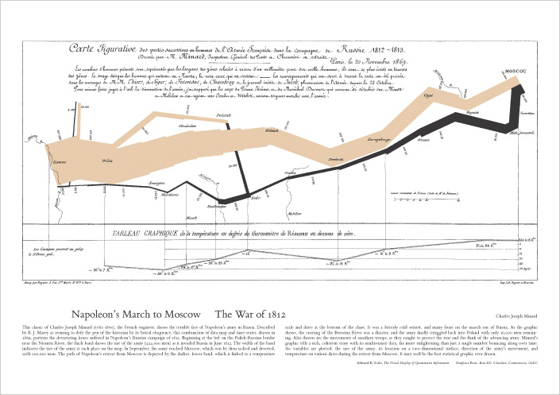
Task 3a “Colormaps are an interface between your data and your brain.” Watch the video on the viridis (green in Latin) palettes (20 minutes). What are the advantages of the viridis color palettes?
Task 3.b Of the viridis palettes, tell me which are you most interested to use: “Viridis”, “magma”, “plasma”, and “inferno”, “cividis”? (Links to an external site.)
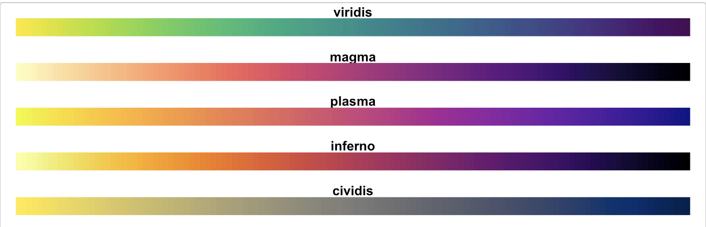
4. Browse ‘Fundamentals of Data Visualization’ https://clauswilke.com/datavizLinks to an external site. Find two figures marked ‘Bad’ in red, like the one below, and summarize the reasons the author thinks the visualization fails.
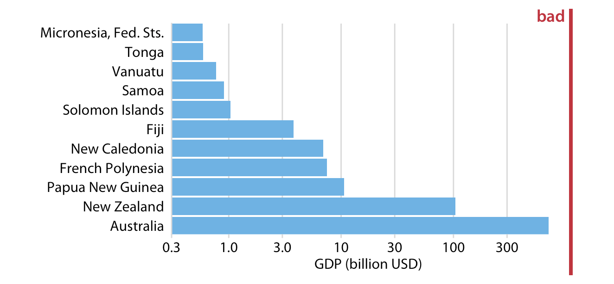
2. Review of week 1
Introductions
Last week we learned about the R, a language for st_t_st_c_l c_mp_t_ng. And we learned about CRAN, the C_mpr_h_ns_v_ R Arch_v_ N_tw_rk which is used to share R “p_ck_g_s”. Packages distribute code or data that is too specialized for the R language itself. A first package we downloaded from CRAN was the data package, b_byn_m_s, with the install.package("babynames") command.
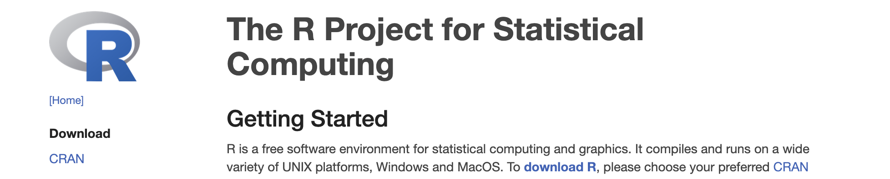
An ecosystem of R packages is the ‘t_dyv_rs_’, which is designed for common data analysis tasks and whose orchestrator is H_dl_y Wickham.
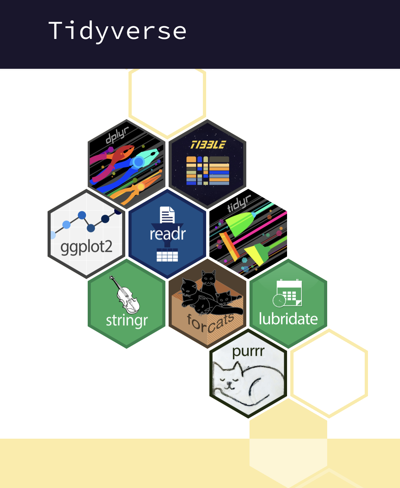
With R code, we saw that we could store information in objects. For example we stored numeric values in objects named x andy. And instructions in f_nct__ns with names like x_plus_y. And d_t_ fr_m_s (that have values stored in columns and rows) in objects with names like gap2002. All of these objects can created using the assignment operators, = or <-, (and even ->)
my_new_object = 1
x <- 5
y = 6
my_vector_of_numbers <- c(2,4,1,6,2)
adding <- function(x, y){x + y}Reproducibility
We talked about how using code to perform analysis allows for greater r_pr_d_c_b_l_ty meaning that we or others can rerun our analysis in a precise way.
We were introduced to RSt_d__ which is an integrated development environment (IDE). At first, we used the console to try out some simple mathematical operations with the R programming language. Using the console is kind of like a casual conversation in the R language! To allow for greater reproducibility - to r_c_rd our analytic ‘conversation’ – we’ve been created a ‘q__rt_’ file, which allowed us to write prose (n_t_r_l l_ng__g_), and code. Upon r_nd_r_ng the quarto document, the prose, code and output (graphs, or calculated values) were all published together and viable in the viewer pane of RStudio. The quarto file itself (the ‘source’ file) has a .qmd extension, and we ‘rendered’ it to a new ‘html’ which is what the viewer pane displayed.
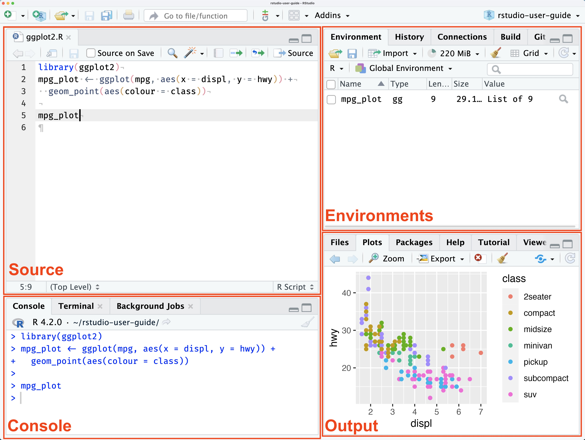
Data v_s__l_z_t__n
We also talked about d_t_ v_s__l_z_t__n being an especially powerful way to both _xpl_r_ and c_mm_n_c_t_ about data, because visualized data can be pr_-_tt_nt_v_ly pr_c_ss_d that’s processing without even mentally focusing on them. That is, the patterns in the data are noticed in an _ff_rtl_ss way when visualized (patterns that would be really hard to notice if the data were not visualized, and just in a table).
We were introduced to ggpl_t2, a foundational package of the t_dyv_rs_ that implements the gr_mm_r _f gr_ph_cs philosophy described in Leland Wilkinson, book “the Grammar of Graphics”. This framework describes the c_mp_n_nts of data visualizations (or ’statistical graphics; as he calls them), and advocates for systems that allow these components to be declared _nd_p_nd_ntly.
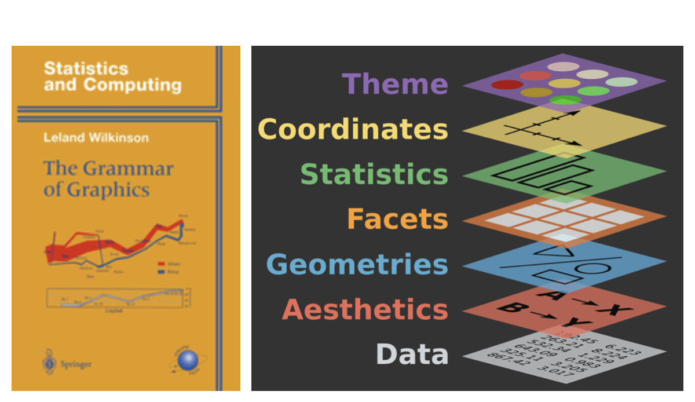
The ggplot2 system requires at least three of the graphical components to be declared:
The d_t_
The aesthetic m_pp_ng (or visual encoding how variables should be represented thinks like color, x-position, y-position, linetype, size, which ggplot2 calls ‘__sth_t_cs’
… and..
Geometric shapes that can take on these v_s__l __sth_t_cs Examples of these ‘geoms’, are lines, points, rectangles, bars.
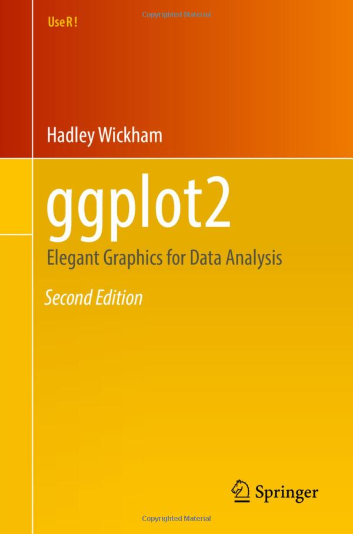
We learned about the g_pm_nd_r project, watched a video of H_ns Rosling presenting the gapminder data, and we used ggplot2, to produce a frame (2002) of the animated version of the plot he put together.
3. More ggplot2/grammar of graphics practice…
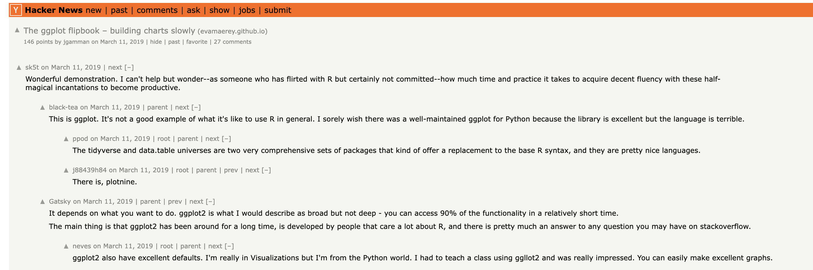
data - the declarative mood
aesthetics (encoding) - the interrogative mood
- y position
- x position
- size
- color (and fill color)
- linetype
- transparency
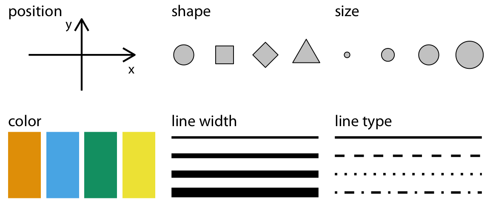
geoms (marks) - nouns
static: cheatsheet
https://rstudio.github.io/cheatsheets/data-visualization.pdf
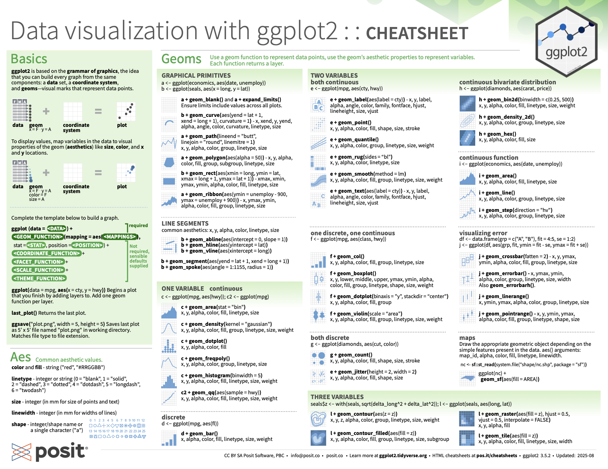